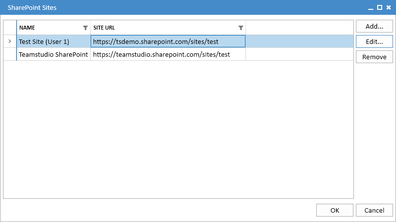
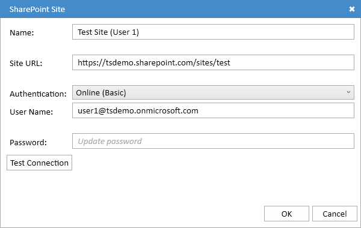
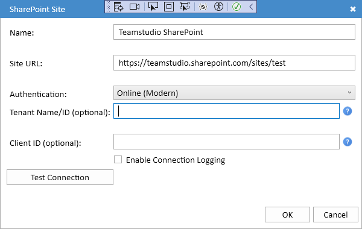

SharePoint の設定
Sites... ボタンをクリックすると、SharePoint サイトの設定を管理するための SharePoint サイトダイアログが表示されます。

各サイト設定では、SharePoint サイトの場所 (URL)、認証方法、および必要に応じてアクセスに必要な資格情報が定義されます。
サイトの設定
Add... および Edit... ボタンを使用して、新しいサイトを作成するか、既存のサイトを編集できます。どちらかを選択すると、SharePoint サイトダイアログが表示されます。

Tこのダイアログは、選択された認証方法によって少し異なる見た目になります。
共通設定
- Name サイトを参照するために使用される名前。これは任意のテキストを指定でき、Export UI でサイトを識別するためだけに使用されます。
- Site URL SharePoint サイトの完全な URL。
- Authentification 認証方法。現在、Export は次の2つの方法をサポートしています:
- Online (Basic) 基本的なユーザー名/パスワード認証を使用する SharePoint Online。
- Online (Modern) モダン OAuth 認証を使用する SharePoint Online。
Online (Basic) 認証
この認証方法は、組織がまだ基本的なユーザー名/パスワード認証を許可している場合に、SharePoint Online で使用されます。この方法は SharePoint Online ではデフォルトで無効になっており、管理者チームによって明示的に再有効化される必要があります。管理者は Microsoft Entra にログインし、Overview を選択してから Properties を選択することで、この方法が利用可能かどうかを確認できます。画面の下部に Security Defaults 設定が表示されます。もし以下のように表示されている場合、

モダン認証が使用されており、ユーザー名とパスワードでログインすることはできません。
ユーザー名とパスワード認証が利用可能な場合は、認証方法として Online (Basic) を選択してください。この場合、ダイアログは次のようになります:
適切なフィールドにユーザー名とパスワードを入力します。Test Connection ボタンを使用して、すべてが正常に動作しているかどうかを確認できます。パスワードは Microsoft Data Protection API (DPAPI) を使用して暗号化され、コンピュータにログインしている他のユーザーは読み取ることはできません。
Online (Modern) 認証
この認証方法は、SharePoint Online 向けに大幅に強化されたセキュリティを提供し、ほとんどのユーザーに推奨されます。
Online (Modern) 認証を選択すると、ダイアログは次のように表示されます:

この方法では Tenant ID および Client ID を使用しますが、通常は Export がこれらの値を自動的に提供するため、これらのフィールドは空白のままにしておきます。
Tenant ID
この Tenant ID は、Microsoft 365 上で組織を識別します。サイト URL が https://<tenant>.sharepoint.com/... という形式の場合、<tenant> がテナント名であり、Export は自動的に Tenant ID を取得できます。その場合、Tenant Name/ID フィールドは空白のままにしておいてください。サイト URL が sharepoint.com ではない場合は、管理者に Tenant Name/ID を問い合わせる必要があります。Tenant ID フィールドには、いずれかを入力できます。
Client ID
この Client ID は、SharePoint へのアクセスに使用するアプリケーションを識別します。ほとんどの場合、デフォルトの Teamstudio Export アプリケーションを使用するため、空白のままにしておくことができます。組織がサードパーティのアプリケーションへのアクセスを許可していない場合、管理者は以下の説明に従ってプライベートアプリケーションを登録する必要があります。その後、管理者からそのアプリケーションの Client ID が提供されます。
必要に応じて Tenant ID および Client ID を設定したら、Test Connection ボタンを使用してすべてが正しく設定されていることを確認できます。初めて使用するときは、ユーザー名とパスワードでログインするよう求められます。これにより、アクセストークンが生成され、コンピュータに保存されるため、再度ログインする必要はありません。アクセストークンは、通常 AppData\Local\Teamstudio 内のローカルアプリケーションデータフォルダにある MSALCache という名前のファイルに保存されます。このファイルもパスワードと同様に DPAPI を使用して暗号化されており、コンピュータにログインしている他のユーザーには読み取れません。
接続に問題がある場合は、Enable Connection Logging ボックスにチェックを入れて詳細な接続ログを有効にできます。これにより、ローカルアプリケーションデータフォルダに詳細な接続ログが書き込まれます。ログには、個人を特定できる情報は含まれません。
Teamstudio Export の Entra への登録
これらは SharePoint Online 管理者向けの手順です。デフォルトで登録されたアプリケーションを使用できない、または使用したくない場合にのみ必要です。ほとんどの場合、これらの手順は不要です。管理者は SharePoint Online を設定して、必要な値をユーザーに提供することができます。
Export は、リストの作成と書き込みのために、必要な権限を持って Microsoft Entra にアプリケーションとして登録される必要があります。これは、Microsoft Entra から実行されます。
- Applications カテゴリを展開し、App Registrations を選択します。
- New Registration を選択します。
- 名前に Teamstudio Export と入力します。
- Supported Account Types で、Accounts in this organizational directory only を選択します。
- Redirect URI (Optional) では、ドロップダウンから Public client/native を選択し、URI に http://localhost と入力します。これは https ではなく http である必要があります。また、このステップは省略できません！
- Register ボタンをクリックしてアプリケーションを作成します。
- Export は SharePoint でリストを作成するため、必要な権限を付与する必要があります。これを行うには、Manage の下にある API permissions を選択します。
- Add a permission をクリックします。アプリケーションのリストから SharePoint を選択し、Delegated permissions を選択します。AllSites.Manage 権限をチェックし、Add permissions ボタンをクリックします。
これで必要な設定でアプリケーションが登録されます。アプリケーションの概要から、Application (client) ID の値と Directory (tenant) ID をコピーできます。これらが、ユーザーが Export を設定する際に必要となる値です。